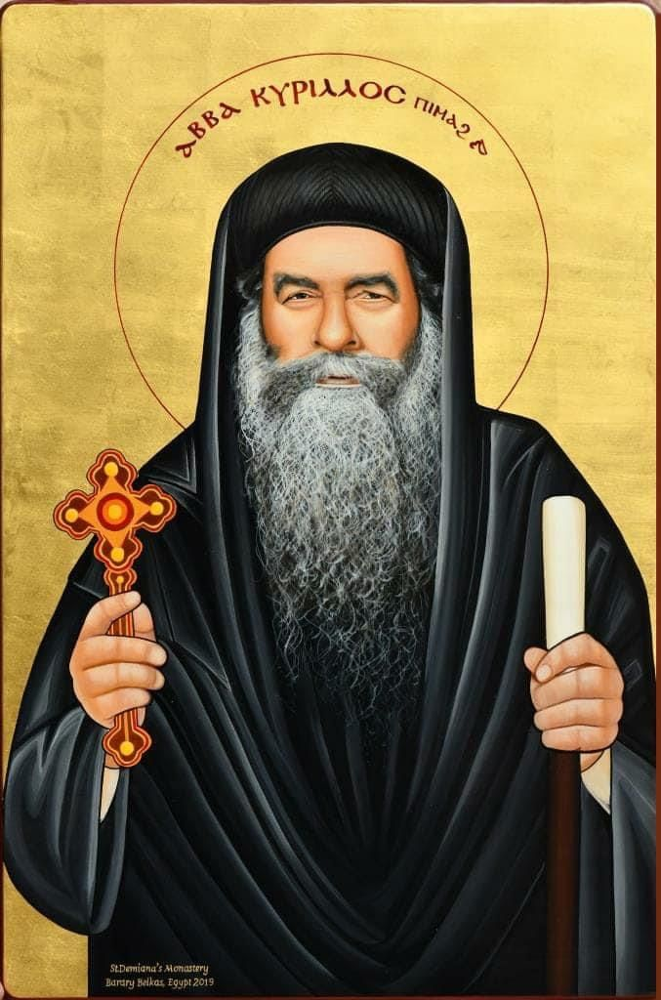

| الترتيب البابوي: | البطريرك المائة والسادس عشر (116) |
| الاسم قبل الرهبنة: | عازر يوسف عطا |
| فترة الرعاية: | 1959 م - 1971 م |
| الاسم الرهباني: | الراهب مينا البراموسي المتوحد |
نبذة تاريخية مفصلة
عاش البابا كيرلس السادس حياة نسكية صارمة قبل اعتلائه الكرسي البابوي؛ حيث سكن في طاحونة مهجورة بمصر القديمة وحولها إلى مكان للصلاة والعبادة، واشتهر بصلته العميقة بالشهيد مارمينا العجايبي. تم اختياره للبطريركية عبر القرعة الهيكلية في أبريل عام 1959.
أهم الإنجازات والنهضة الروحية
- بناء الكاتدرائية المرقسية بالعباسية: وضع حجر أساسها عام 1965 بمشاركة الرئيس جمال عبد الناصر والإمبراطور هيلا سيلاسي حاكم إثيوبيا، وافتتحها رسمياً عام 1968.
- إعادة رفات مارمرقس: نجح في استعادة رفات القديس مرقس الرسول من مدينة البندقية (فينيسيا) بإيطاليا بعد قرون من خروجها من مصر، ودُفن ال رفات أسفل الكاتدرائية الجديدة.
- ظهور السيدة العذراء بالزيتون: شهدت الكنيسة في عهده الحدث التاريخي لظهور القديسة مريم فوق قِباب كنيستها بالزيتون عام 1968، مما جذب مئات الآلاف من الزوار وأنعش الإيمان الروحي.
- بناء دير مارمينا بمريوط: أعاد إحياء المنطقة الأثرية التاريخية للقديس مارمينا في صحراء مريوط وبنى ديراً ضخماً أصبح مركزاً روحياً بارزاً.
- نهضة التعليم والقداسات اليومية: تميز عهده بإقامة القداسات اليومية الصباحية الباكرة واهتمامه الشديد بالطلبة والشباب المغتربين.
أشهر أقواله ومأثوراته
"كن مطمئناً جداً جداً ولا تفكر في الأمر كثيراً، بل دع الأمر لمن بيده الأمر."
"صلاتي هي سلاحي، وبها أواجه كل المشاكل."